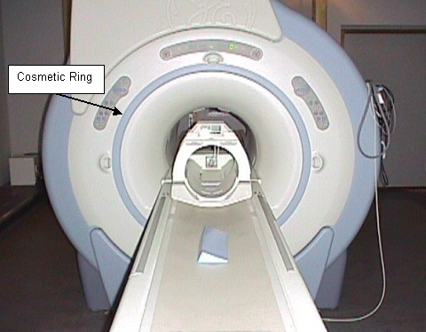
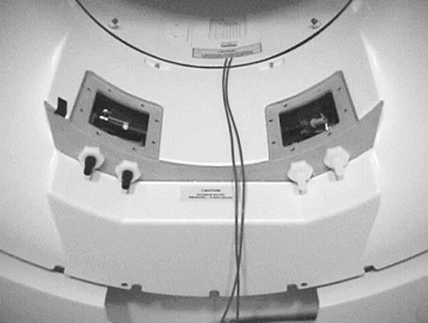
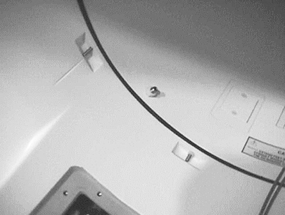

Operating Documentation
Direction 5133315-3, Rev# 14
Signa EXCITE HD 1.5T Service Methods
Module Version 1.0, Version Date 5/3/07
Operating Documentation |
| Required Persons | Preliminary Reqs | Procedure | Finalization |
|---|---|---|---|
| 1 |
Procedures for removing the front end bell.
Lock out and tag out circuit breaker MR1 A14 CB6 at rear of RF/Pen Cabinet (MR1) on magnet enclosure power supply (MEPS) module.
For RF/Pen II and RF/PDU Cabinet: Lock out and tag out circuit breaker MR1 A20 CB4 at rear of RF/Pen II and RF/PDU Cabinet on System Support Module (SSM). (Refer to LOCKOUT TAGOUT Procedure and Checklist.)
Verify that voltage between MR1 A14 TP4 (+) and TP13 (–) is 0 Vdc.
For RF/Pen II and RF/PDU Cabinet, verify that voltage between MR1 A20 TP4 (+) (SRI+24V) and TP13 (–) (SRI RTN) is 0 Vdc.
Set the SCC to “Service Mode” by flipping the toggle switch from the top position to the bottom position. This will prevent the Magnet Monitor from dialing out.
Power off and perform Lock-out/Tag-out to the Systems Cooling Cabinet (SCC).
Remove bridge. See Bridge Removal.
Remove the cosmetic ring. See Illustration 1.
Illustration 1: COSMETIC RING

Remove the cosmetic cover that fits over the RF Coil/front end bell junction.
Remove the temperature sensor cable that is routed through the front end bell.
Remove water fittings for the supply and return lines. Drain excess coolant into a bucket (see Illustration 2).
Illustration 2: WATER FITTINGS SUPPLY AND RETURN LINES

Remove the two plates located on top of the coolant feed throughs (see Illustration 2).
Disconnect the four coolant lines located inside of the front end bell.
Remove the two bias lines at the front of the magnet. Extend the RF tube feet all the way down: two in front and two in the rear.
Remove the eight nuts that secure the front end bell to the RF coil (see Illustration 3).
Illustration 3: FRONT END BELL

Use an 8 mm wrench to remove the 24 M10 bolts that secure the front end bell to the magnet.
Slowly remove the front end bell.
No finalization steps.